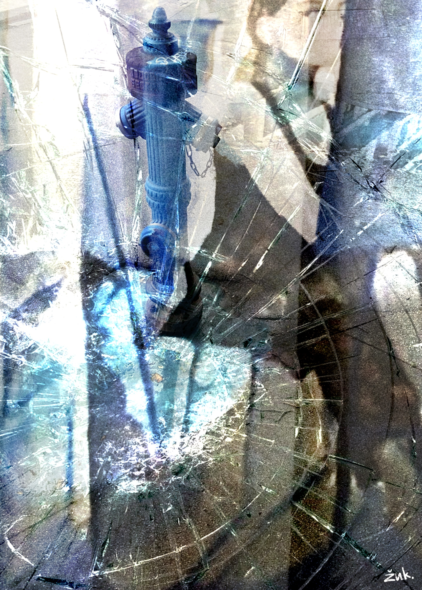

ощущение бессмертия
la sensazione di immortalità
a sense of immortality

ощущение собственного бессмертия и вседозволенности
внутри мешается с пикетом против себя же
наступит утро, и мрачная надобность дубинками разгонит страдания
ты мне говорила о любимом городе, кофе с сигаретой перед универом
а я лишь приглушённо смеялся
и думал, какая ты милая
так начинался и отравлял моё сердце
период внутренней безнравственности,
перебои с памятью, кошмары каждую ночь
усугублять симптомы безучастными дамами
разбавлять обстановку травой под молчаливым небом
звать кого-то незнакомым именем
иногда я вижу тебя в отражении,
тепло сжимающей руку в инее.
la sensazione della propria immortalità e onnipotenza
si mescola dentro a un picchetto contro me stesso
arriverà il mattino e una tetra necessità disperderà le sofferenze a colpi di manganello
tu mi parlavi della tua città preferita, di caffè e sigaretta prima dell’università
e io ridevo sommessamente
pensando a quanto fossi tenera
così iniziava e avvelenava il mio cuore
un periodo di immoralità interiore
vuoti di memoria, incubi ogni noite
aggravare i sintomi con donne indifferenti
stemperare l'atmosfera con l'erba sotto un cielo silenzioso
chiamare qualcuno con un nome estraneo
a volte ti vedo nel riflesso,
mentre stringi con calore una mano nella brina.
a sense of my own immortality and total impunity
mixes inside with a picket line against myself
morning comes, and grim necessity will break up the suffering with riot batons
you spoke of your favorite city, of coffee and cigarettes before university
while I just laughed quietly
thinking how cute you were
so began and poisoned my heart
a period of inner depravity
memory lapses, nightmares every night
aggravating symptoms with indifferent women
diluting the atmosphere with weed under a silent sky
calling someone by a stranger’s name
sometimes I see you in the reflection,
warmly clasping a hand in the frost.